Qué había en Panamá antes del 19 de octubre: el modelo económico dual, el sistema de partidos en descomposición y treinta años de conflicto minero.
Una de las demandas en la revuelta del 2023 fue que la empresa minera iba a tributar poco en relación a sus extraordinarias ganancias, en medio de un contexto de desgaste del modelo económico. Desde el comienzo del siglo XXI, Panamá experimentó un crecimiento sobresaliente que superó ampliamente el promedio de América Latina, logrando incluso duplicar su PIB per cápita. Sin embargo, este progreso estuvo caracterizado por una marcada dualidad tanto estructural como territorial. La actividad productiva depende en gran medida de la región interoceánica y del sector de servicios —como la construcción, el comercio, las finanzas y la logística—, los cuales concentran la mayor parte de los ingresos. En contraste, sectores como la agricultura y la industria han quedado rezagados, evidenciando un modelo económico que, aunque genera empleo, enfrenta serios desafíos para incrementar su productividad a largo plazo. Este auge económico se tradujo en avances significativos para el desarrollo humano y la calidad de vida de los panameños. Durante las épocas de mayor expansión comercial, los índices de pobreza y la desigualdad disminuyeron de forma notable, lo que permitió que la mayoría de la población pasara a conformar la clase media. Asimismo, se registraron mejoras sustanciales en el acceso a la salud y al saneamiento. No obstante, desde el año 2016 este ritmo de mejora social se ha estancado, y a pesar de la riqueza generada, el país aún presenta un Índice de Desarrollo Humano (IDH) inferior al de otras naciones latinoamericanas con niveles de ingresos similares, como Chile o Uruguay. Además, los beneficios de la bonanza no se distribuyeron de manera equitativa. La estructura laboral apenas cambió en dos décadas; los aumentos en los ingresos reales favorecieron principalmente a empleadores y profesionales, mientras que los trabajadores informales y no calificados apenas vieron mejoras. En consecuencia, la nueva clase media panameña es sumamente vulnerable ante posibles crisis, y persisten graves brechas que afectan sobre todo a mujeres, poblaciones indígenas y zonas rurales (PNUD, 2024).
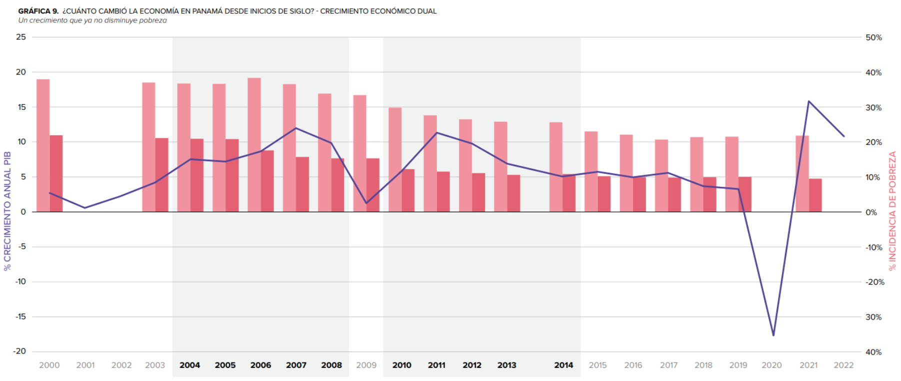
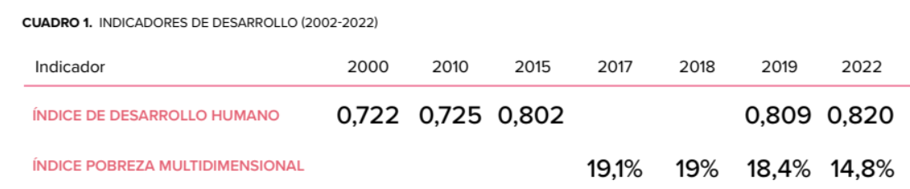
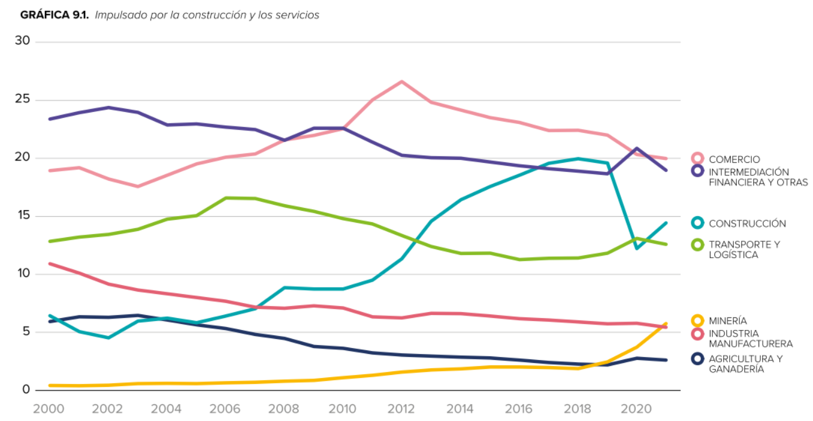
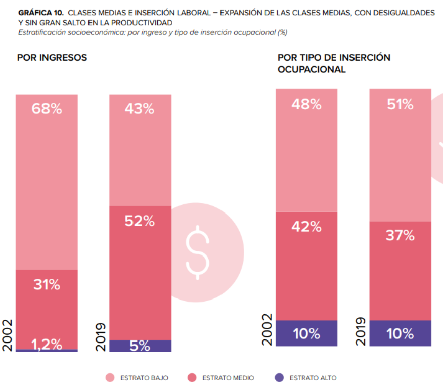
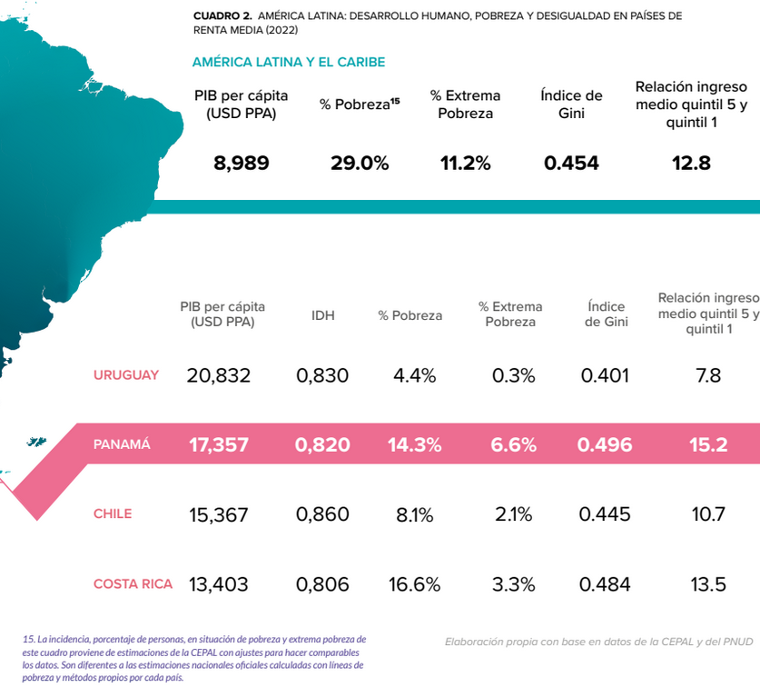
El PNUD (2024) afirmó que hubo un trasfondo de malestar socioeconómico detrás de la conflictividad en Panamá después de la pandemia del COVID-19. En 2020, la economía panameña sufrió una histórica contracción del 17,7% —la mayor de América Latina— debido a su alta dependencia de los servicios, el comercio y el Canal, lo que disparó el desempleo al 18,6% y redujo drásticamente los ingresos y la seguridad alimentaria de los hogares. Aunque el gobierno implementó un fuerte gasto fiscal a través de programas de asistencia como "Panamá Solidario" para mitigar el aumento de la pobreza, la crisis profundizó las brechas estructurales, afectando de manera desproporcionada y persistente a mujeres, trabajadores informales y poblaciones indígenas. A pesar de lograr un notable rebote económico del 15,8% en 2021, la recuperación del mercado laboral fue incompleta y desigual, dejando un rezago de vulnerabilidad social que, sumado al impacto inflacionario global derivado de la guerra en Ucrania a inicios de 2022, detonó un profundo malestar ciudadano y el aumento de la conflictividad en el país.
La revuelta de 2023 ocurrió en un escenario de creciente inestabilidad de los partidos. Históricamente, el sistema de partidos en Panamá se ha caracterizado por ser pragmático, clientelar y personalista, con una clara homogeneidad ideológica orientada hacia la centroderecha y una total ausencia de fuerzas de izquierda en el parlamento desde 1990. Durante los veinte años posteriores a la transición democrática de 1989, esta política se estructuró en un sistema bipolar y previsible, donde el poder presidencial se alternaba de forma rutinaria y perfecta entre el Partido Revolucionario Democrático (PRD) —heredero del régimen militar— y el Partido Panameñista (PAN) —símbolo de la lucha civil pro-democrática—. Favorecidos por un sistema electoral de una sola vuelta, los partidos más pequeños orbitaban en torno a estos dos grandes bloques que dominaban la escena nacional y la Asamblea Nacional. Este escenario tradicional sufrió una ruptura definitiva en 2009 con la victoria presidencial de Ricardo Martinelli, la cual acabó con la alternancia histórica e instauró un nuevo orden tripartidista al sumar a Cambio Democrático (CD) como actor principal. Sin embargo, este nuevo equilibrio se resquebrajó rápidamente hacia las elecciones de 2019, dando paso a una fase crítica de alta volatilidad y fragmentación. En esos comicios, el candidato presidencial electo obtuvo apenas el 33,4% de los votos (el porcentaje más bajo desde 1994), mientras que el apoyo a los candidatos independientes o de libre postulación experimentó un crecimiento explosivo, saltando de menos del 1% en 2014 a más del 24% (Nevache, 2024; Perelló & Alvarado, 2025; Wikipedia, n.d.-a, n.d.-b).
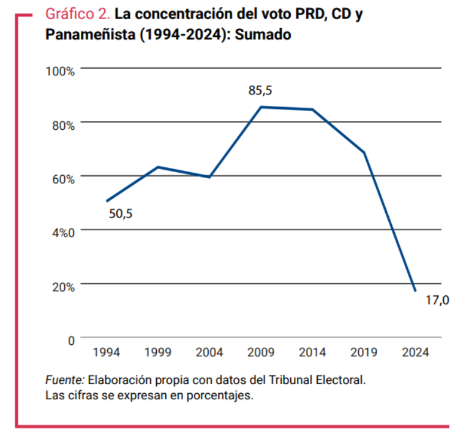
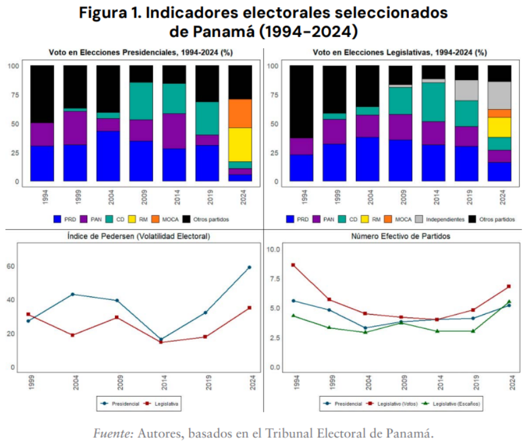
La revuelta ocurrió bajo el gobierno de Laurentino Cortizo (PRD), cuya gestión entre 2019-2024 enfrentó cuatro grandes obstáculos que minaron profundamente su gestión y legitimidad. En primer lugar, un mandato de origen débil. Cortizo llegó al poder en 2019 aprovechando su posición como principal figura de la oposición, pero lo hizo con apenas el 33,4% de los sufragios. Al no existir una segunda vuelta electoral en el sistema panameño, este porcentaje representó el respaldo presidencial más bajo registrado desde 1994. En segundo lugar, la crisis multidimensional de la pandemia. La irrupción del covid-19 en 2020 expuso las severas carencias del sistema sanitario y provocó la peor recesión en la historia del país, con un desplome del 17,7% del PIB. A las drásticas y prolongadas medidas de confinamiento —duramente criticadas por diversos sectores— se sumó la indignación pública por los graves escándalos de corrupción vinculados a la compra irregular de insumos médicos. En tercer lugar, el deterioro de la salud presidencial. A mediados de 2022, el mandatario fue diagnosticado con un tipo de cáncer (síndrome mielodisplásico), lo que lo forzó a reducir sus actividades públicas y a ausentarse del país. Este vacío delegó el liderazgo de la nación al vicepresidente José Gabriel Carrizo en medio de una doble crisis (sanitaria y financiera), asumiendo un fuerte desgaste que le pasaría factura en su posterior aspiración presidencial. En cuarto lugar, la constante agitación social. La administración perredista fue el blanco de masivas movilizaciones ciudadanas que evidenciaron un profundo hartazgo colectivo. La primera gran crisis ocurrió en 2019, cuando la presión social, encabezada por universitarios, forzó al gobierno a retirar un polémico paquete de reformas constitucionales. Posteriormente, en junio de 2022, una alianza de docentes, estudiantes e indígenas lideró un mes de protestas históricas en rechazo a la corrupción, la falta de empleo y el alto costo de vida, doblegando a un gobierno errático que finalmente tuvo que ceder congelando los precios del combustible (Perelló & Alvarado, 2025).
La revuelta también ocurrió en un contexto de malestar del electorado con la oposición, conformado por Cambio Democrático (CD) y el Partido Panameñista (PAN). A pesar de haber asegurado una cuota importante de escaños legislativos en 2019, ambas fuerzas demostraron una total incapacidad para ejercer un contrapeso político efectivo frente a la mayoría gobernante. Por el contrario, su actitud pasiva y distante terminó reforzando la percepción ciudadana de una clase política cómplice, acusada de priorizar sus propios beneficios y agendas partidistas por encima de las urgencias de la población, justo cuando el país atravesaba una de las crisis socioeconómicas más severas de las últimas décadas (Perelló & Alvarado, 2025).
La revuelta ocurre en un contexto de ascenso de la desconfianza en las instituciones públicas. En el gráfico de abajo del PNUD (2024), se muestra que desde 2010 hay grandes cambios. En el 2024, solo el 7% de los encuestados de la Encuesta Nacional de Desarrollo Humano[[NOTA:1]] dijo que confiaba en la Asamblea Nacional, 10% en la Presidencia, el 12% en los partidos, el 14% en los municipios y el 18% en la justicia. La Policía Nacional es la única entidad que mantiene un nivel de confianza elevado desde hace un decenio.
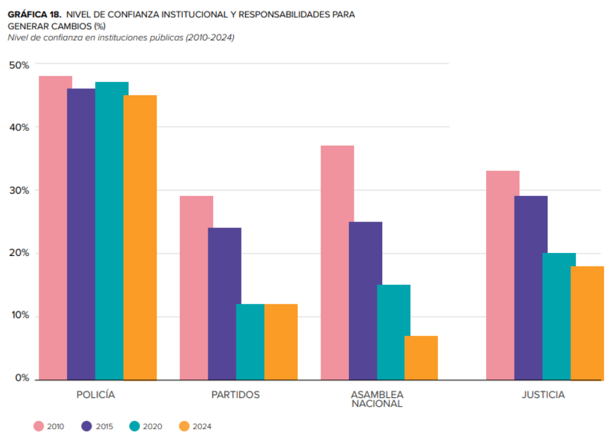
Una gran controversia social existió desde los años noventa contra Minera Panamá y First Quantum Minerals. El conflicto por la extracción de cobre a cielo abierto en Panamá tiene su origen en el contrato otorgado de manera irregular, sin licitación ni estudios de impacto ambiental, a Petaquilla S.A. (posteriormente adquirida por First Quantum Minerals) en 1997, para explotar 13.000 hectáreas en el corazón del Corredor Biológico Mesoamericano. Tras una demanda impulsada por la sociedad civil, la Corte Suprema de Justicia declaró inconstitucional este acuerdo en un fallo de 2017 que tardó años en oficializarse. Lejos de hacer cumplir la resolución, el gobierno de Juan Carlos Varela (2014-2019) permitió que la empresa continuara operando de facto e incluso intentó, sin éxito, reintroducir el mismo contrato en la Asamblea Nacional antes de terminar su mandato, permitiendo que la minera iniciara sus exportaciones a mediados de 2019 sin ningún sustento jurídico. Ante este panorama, la administración entrante del presidente Laurentino Cortizo (2019-2024) permitió que las operaciones y exportaciones continuaran ininterrumpidamente, bajo el argumento de que cerrar la mina representaría un "suicidio económico". En lugar de acatar el fallo judicial, el gobierno optó por renegociar a puerta cerrada un nuevo acuerdo con la empresa canadiense desde principios de 2022. Cuando este nuevo pacto se presentó a mediados de 2023, se hizo de forma opaca y excluyendo la participación ciudadana, lo que reactivó las protestas de organizaciones sociales que denunciaron que el nuevo documento repetía los mismos vicios de inconstitucionalidad del pasado, incluyendo la concesión directa sin licitación pública. Más allá de las irregularidades legales, el rechazo a la mina posee un fuerte componente ambiental. Organizaciones como el Centro de Incidencia Ambiental (CIAM) han revelado cientos de incumplimientos ecológicos que han quedado impunes por tácticas dilatorias de la empresa, entre los que destacan la deforestación de casi 3.000 hectáreas (876 de ellas no autorizadas), descargas ilegales de residuos en cuerpos de agua y una deuda millonaria con el Ministerio de Ambiente. Ante ello, coaliciones como el Movimiento Panamá Vale Más Sin Minería protestaron desde varios años antes del 2023 para exigir un debate público, reafirmando que la minería metálica sostenible es imposible dadas las condiciones institucionales del país (BBC, 2023; FUNDICCEP & Red Nacional en Defensa del Agua Panamá, 2024).
Desde 2009 y hasta antes de pandemia, las principales movilizaciones sociales en Panamá fueron motivadas por conflictos socioambientales —especialmente en rechazo a proyectos mineros e hidroeléctricos—, alineándose con la visión regional de defender el territorio en favor de la vida. Cabe destacar que esta fuerte conciencia ecológica ha trascendido las fronteras de las comunidades rurales o indígenas para arraigarse profundamente en todos los sectores de la sociedad. De hecho, cerca del 66% de los panameños prioriza la protección del medio ambiente por encima del crecimiento económico, lo que demuestra que el compromiso con la naturaleza es un valor transversal y ampliamente compartido en el país (Nevache, 2024).
La expansión de los mercados globales y los megaproyectos en Panamá durante el siglo XXI han provocado el despojo territorial y la severa degradación ambiental en perjuicio de comunidades campesinas e indígenas. Por un lado, la construcción y ampliación del Canal de Panamá priorizó la conservación de cuencas de agua para el comercio marítimo internacional, marginando y desplazando a los agricultores rurales de la zona. Por otro lado, la alta demanda internacional impulsó un agresivo extractivismo minero (como en Cerro Colorado, Petaquilla, Santa Rosa y Cerro Quema) que amenaza la subsistencia local mediante la contaminación con cianuro y la deforestación. A esto se suma la expansión de la frontera agrícola en la región del Darién, donde las comunidades indígenas Emberá-Wounaan enfrentan constantes invasiones de sus tierras colectivas, impulsadas por la especulación generada tras la extensión de la Carretera Panamericana. En los tres escenarios, el Estado panameño y las élites económicas actúan como facilitadores de este despojo, priorizando el lucro a corto plazo sobre los derechos sociales y ecológicos. Las leyes y políticas públicas se aplican de forma selectiva y desigual: mientras las corporaciones mineras transnacionales, los promotores del Canal y los colonos madereros o ganaderos reciben un apoyo gubernamental tácito o explícito, las demandas de reconocimiento territorial de los indígenas sufren retrasos burocráticos estratégicos e impunidad institucional. Además, esta marginación y violencia se justifican frecuentemente mediante discursos racistas y estigmatizantes que catalogan a los campesinos e indígenas como "perezosos", "improductivos" o como obstáculos para el desarrollo y la modernidad, legitimando así el acaparamiento de tierras. Frente a estas abrumadoras presiones, las comunidades han forjado fuertes movimientos de resistencia popular como la Coordinadora Campesina Contra los Embalses (CCCE), diversos frentes antimineros y las autoridades indígenas en el Darién y otras comarcas han recurrido a manifestaciones, bloqueos de carreteras y campamentos de protesta para exigir transparencia y el reconocimiento de sus títulos colectivos (Gandásegui, 2012; Graham, 2013; Sarrazin, 2015).
Tras superar la severa contracción económica y la incertidumbre derivadas de la pandemia, Panamá ingresó a una etapa pospandémica marcada por un agudo nivel de conflictividad y malestar social, contrastando drásticamente con la década previa de sostenido crecimiento económico y expansión de la clase media. Este descontento se materializó en las masivas protestas de mediados de 2022 y finales de 2023, las cuales involucraron a decenas de miles de personas y llegaron a paralizar temporalmente la economía y la cotidianidad del país. No hubo movilizaciones sociales tan grandes y socialmente transversales desde las que se produjeron en el siglo pasado con motivo de la demanda por la recuperacion del canal (PNUD, 2024).
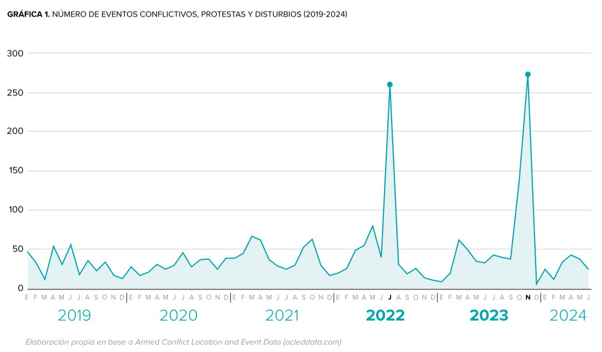
La revuelta de 2023 fue el resultado de años de preparación y lucha acumulada, expresadas en campañas multi-sectoriales. El éxito de esta campaña se sostuvo sobre tres pilares fundamentales: las protestas indígenas del pueblo Ngäbe Buglé (2009-2012), la formación de coaliciones intersectoriales (con fuerte presencia sindical) y la experiencia táctica adquirida en recientes luchas contra políticas económicas neoliberales. En relación al primero, el conflicto tiene sus orígenes en 2009, cuando el gobierno panameño intentó facilitar la inversión transnacional para explotar el enorme yacimiento de cobre de Cerro Colorado, ubicado en la comarca Ngäbe Buglé. La respuesta comunitaria fue la creación de asambleas horizontales y, a finales de 2009, se organizó una histórica marcha de 350 kilómetros hacia la Ciudad de Panamá. Esto forjó lazos de solidaridad clave con sindicatos, estudiantes y grupos ambientales. Estas acciones derivaron en la creación de organizaciones como el Comité para la Vida del Medio Ambiente (COVIMA) y la Coordinadora por la Defensa de los Recursos Naturales y del Derecho del Pueblo Ngöbe Buglé y Campesinos, diseñadas específicamente para frenar las concesiones extractivistas. Además, la migración de indígenas hacia zonas urbanas permitió que la resistencia rural se conectara orgánicamente con las ciudades. Los lazos familiares facilitaron que habitantes urbanos se sumaran a los bloqueos en apoyo a las comunidades de la comarca. En segundo lugar, entre 2011 y 2012, estas coaliciones ejecutaron intensas campañas que incluyeron cortes en la Vía Interamericana y manifestaciones urbanas masivas lideradas por el Sindicato Único Nacional de Trabajadores de la Industria de la Construcción y Similares (SUNTRACS) y grupos estudiantiles. Tras más de 350 acciones de protesta contra la minería en todas las provincias del país, lograron que el gobierno cancelara los contratos mineros en la región. Este triunfo cimentó un modelo organizativo basado en que el movimiento debe ser encabezado por las comunidades que sufren el impacto directo (los Ngäbe Buglé) o por organizaciones de justicia ambiental. Asimismo, el núcleo debe expandirse sumando fuerzas con alcance en todo el territorio, incorporando gremios docentes, sindicatos y jóvenes. Finalmente, los gobiernos continuaron con el extractivismo y en 2019 la empresa First Quantum Minerals ya operaba la mina a cielo abierto de Cobre Panamá en la provincia de Colón. Como contrapeso a este renovado impulso gubernamental, en 2021 nació Panamá Vale Más Sin Minería (PVMSM). Esta red agrupó a históricas organizaciones indígenas, sindicatos y colectivos ambientales. Mediante foros y manifestaciones focalizadas frente a instituciones estatales, PVMSM logró mantener el rechazo a la minería vigente en el debate público (Díaz Pinzón & Almeida, 2025).
En julio de 2022, Panamá experimentó su mayor ola de movilizaciones del siglo XXI hasta ese momento, desencadenada por el alto costo de vida en un contexto de fuerte presión financiera internacional para implementar políticas de liberalización económica. Las protestas fueron producto de un profundo descontento social acumulado. Aunque los detonantes inmediatos en las calles fueron el drástico aumento en el precio del combustible, la inflación en la canasta básica y la escasez de medicamentos, estas movilizaciones expusieron fracturas estructurales más antiguas: una marcada desigualdad económica, servicios públicos deficientes y constantes escándalos de corrupción que se vieron agravados por la pandemia de covid-19. Lo que inició como una serie de reclamos en provincias rurales liderados por pequeños productores y transportistas, rápidamente se fusionó con un paro nacional convocado por gremios docentes. La campaña fue orquestada por dos grandes frentes multisectoriales —la Alianza Pueblo Unido por la Vida y la Alianza Nacional por los Derechos del Pueblo Organizado (ANADEPO)— que lograron articular a una amplia diversidad de actores. Esta convergencia sumó a sindicatos de la construcción, personal de salud, docentes, estudiantes, pueblos indígenas, agricultores y ciudadanos en general. Esta contundente demostración de fuerza organizativa se expandió hacia los centros urbanos a través de marchas y bloqueos tácticos, acumulando más de 800 manifestaciones en apenas tres semanas y logrando paralizar el país para exigir respuestas a sus necesidades básicas insatisfechas. Tras una respuesta gubernamental inicialmente ineficaz y el rechazo ciudadano a medidas unilaterales, la presión sostenida en las calles forzó la instalación de una Mesa Única de Diálogo mediada por la Iglesia católica. En este espacio, la movilización culminó con éxito, obligando al gobierno a ceder y alcanzar acuerdos vitales. Entre ellos destacan la reducción y congelación del costo del combustible a 3,25 dólares por galón, la ampliación de la canasta básica con productos regulados o subsidiados, mayores exigencias de transparencia y digitalización en la provisión de medicinas, y el compromiso de incrementar gradualmente el presupuesto educativo hasta el 6% del PIB en 2024. Si bien estos consensos permitieron el levantamiento paulatino de los paros, el conflicto evidenció el agotamiento de la población frente a las condiciones de desigualdad (Araúz-Reyes, 2022; Díaz Pinzón & Almeida, 2025).
En agosto de 2023, un estudio demoscópico de representatividad nacional conducido por el Departamento de Sociología de la Universidad de Panamá evidenció el clima de descontento gestante. Los hallazgos revelaron que cerca de la mitad de la población adulta, independientemente de su grupo etario, percibía el extractivismo minero como la principal problemática social del país. Aún más significativo para el análisis del movimiento, un 63% de los encuestados manifestó su disposición a participar en acciones directas de protesta. Estas cifras constatan la existencia de una vasta base de apoyo ciudadano y un alto potencial de reclutamiento para la acción colectiva justo en la antesala de las masivas revueltas urbanas y cortes de ruta de octubre y noviembre. Esto demuestra que las históricas luchas antimineras lograron escalar exitosamente hasta permear la opinión pública a nivel nacional. En este escenario, la robusta infraestructura organizativa y las amplias alianzas multisectoriales tejidas por la red Panamá Vale Más Sin Minería (PVMSM) operaron como el vehículo estratégico que permitió canalizar y materializar el rechazo de grandes sectores de la sociedad civil frente a la devastación ecológica (Díaz Pinzón & Almeida, 2025).
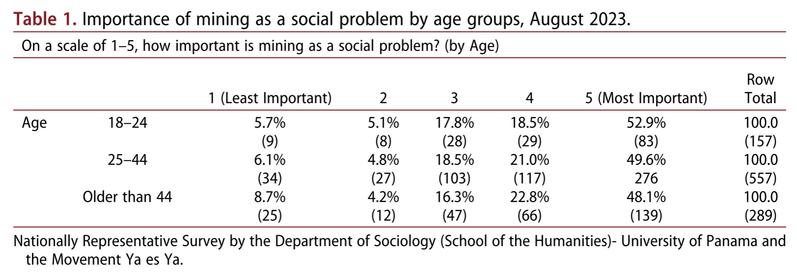
A pesar de la reciente alta conflictividad, la participación en organizaciones sociales sigue siendo moderadas. Según la Encuesta de Desarrollo Humano del PNUD (2024), solo el 29% dijo que participó en alguna organización social en los últimos seis meses, siendo las más importantes las de índole religioso y deportivo. Solo un 9% manifestó que ha participado en un partido político, y es llamativa la baja participación en organizaciones comunitarias, de activismo ambiental o sindicatos (menos del 6%).
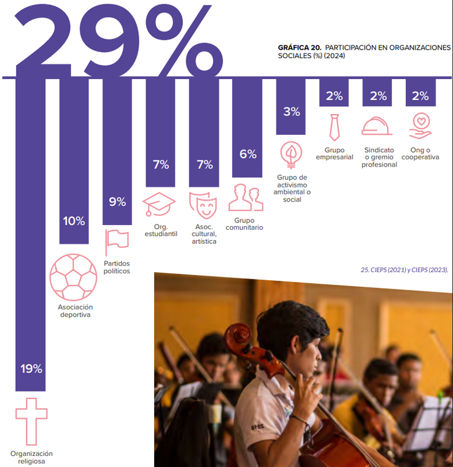
La imagen internacional de Panamá se ha visto profundamente afectada por su vinculación a tramas de alcance global como Odebrecht, Lava Jato y los Panama y Pandora Papers, situación que se agrava por la inclusión de los expresidentes Ricardo Martinelli y Juan Carlos Varela en listas negras por corrupción significativa. Por ejemplo, en el 2016 los Panama Papers revelaron una corrupción endémica, exacerbada por una cultura transaccional conocida popularmente como "juega vivo". A nivel internacional, el histórico escándalo expuso cómo el sistema financiero del país, aprovechando sus leyes corporativas y su entorno de bajos impuestos, facilitó el lavado de dinero y la evasión fiscal a escala global a través de firmas como Mossack Fonseca. A nivel nacional, la credibilidad institucional se vio severamente golpeada por arrestos e investigaciones por enriquecimiento ilícito que involucraron a magistrados de la Corte Suprema, así como por los graves escándalos de malversación de fondos y espionaje. A pesar de que esta crisis institucional ha coexistido históricamente con altas tasas de crecimiento económico, la corrupción se ha consolidado como la máxima preocupación de los panameños, manteniendo al país en una posición deficiente (101 de 180) dentro del Índice de Percepción de la Corrupción de Transparencia Internacional. En respuesta a este panorama, la constante cobertura mediática y el creciente activismo de la sociedad civil han logrado transformar la lucha anticorrupción en una poderosa bandera política (Pérez, 2017).
La influencia minera en el origen de la revuelta del 2023 podría relacionarse con los altos niveles de captura del Estado en Panama, un fenómeno en el cual las funciones del sector público se desvían sistemáticamente para servir a intereses corporativos. Esta problemática no responde necesariamente a una falta de desarrollo en las instituciones regulatorias tradicionales, sino a la acumulación de un formidable poder instrumental por parte de una facción empresarial sumamente cohesionada. Mediante una densa red de directorios entrelazados, un selecto grupo de conglomerados familiares diversificados —en cuyo núcleo se integran también firmas transnacionales como la minera First Quantum Minerals— ha logrado centralizar información estratégica y coordinar acciones corporativas unificadas, limitando de este modo la autonomía del Estado para legislar en favor del bienestar general. Esta estructura de influencia privada sobre el aparato público se consolida a través de mecanismos políticos directos, tales como el financiamiento concentrado de campañas electorales y la extendida práctica de las "puertas giratorias". La designación habitual de líderes corporativos y tecnócratas de confianza en ministerios estratégicos —incluyendo las carteras de Economía, Comercio o la gestión del Canal— ha facilitado la adopción de normativas macroeconómicas y fiscales que perpetúan una de las mayores concentraciones del ingreso de la región (J. Cárdenas & Robles-Rivera, 2020).